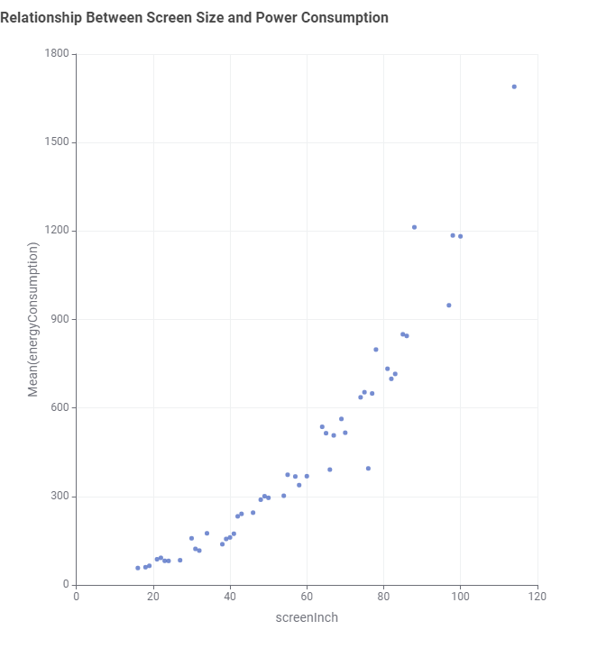
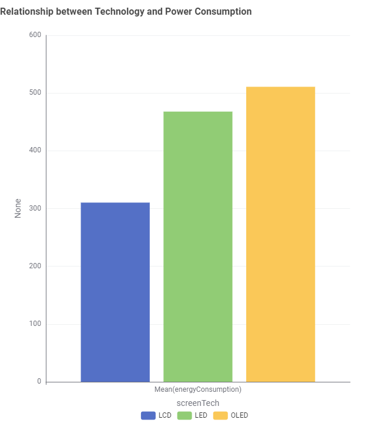
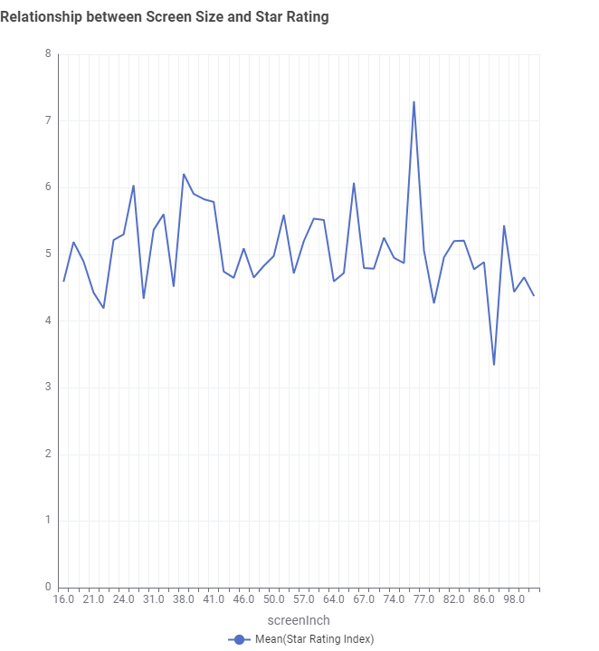

Having trouble chossing YOUR ideal TV?
Here are some of the most asked questions answered.
What is the relationship between screen size and power consumption?
According to the statistics, screen sizes and power consumption are intrisictly linked together, the bigger the screen size, the more power it consumes.
What is the difference in power consumption between common screen technologies such as LED, OLED and LCD?
Power consumption differs between each technology, with LCD on average consumes the least amount of power, LED in second and OLED consuming the most power.
What is the relationship between screen size and Star Rating Index?
While there isnt a specific trend in the graph to point to, we can learn that 76 inches screens score are the highest in Star Ratings at an average of 7.
